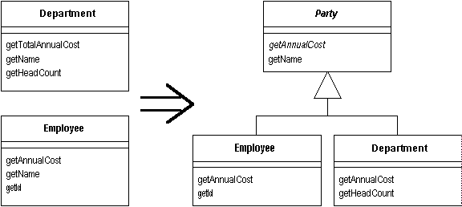

Extract Superclass
You have two classes with similar features.
Create a superclass and move the common features to the superclass.

For more information see page
336
of
Refactoring
| Refactoring Home |
| Alphabetical List |